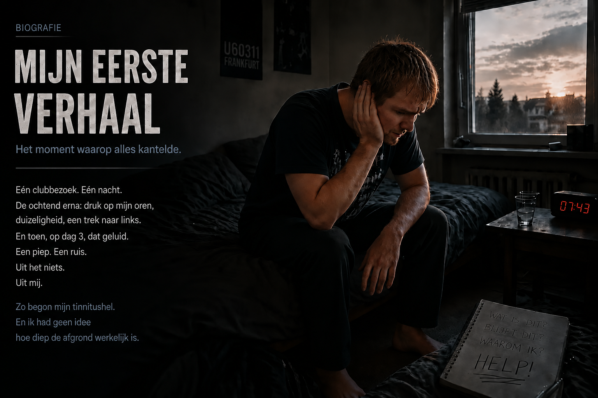
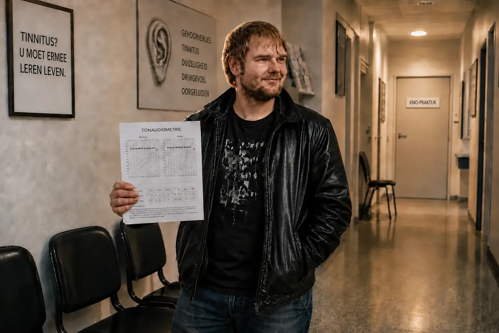

Mijn weg uit de tinnitushel (de korte versie)
Hallo, mijn naam is Dustin Müller.
Als je net op deze pagina bent beland, zit je waarschijnlijk in dezelfde hel waar ik toen in zat. Het hele verhaal – elk bezoek aan een KNO-arts, elk audiogram, elke doorbraak – staat in mijn biografie in twee delen. Dit is de korte versie: hoe ik mijn tinnitus van 100 naar 0 heb gebracht. Twee keer.
1. Herfst 2011: de disco
Ik was 23, kerngezond, en dacht dat mijn lichaam alles wel kon hebben. Mijn neef haalde me over om voor het eerst in mijn leven naar een disco te gaan, de U60311 in Frankfurt. Naïef als ik was, ging ik op de beste vrije plek staan: op een kleine zes tot acht meter voor de luidsprekers, vier uur lang. Bij het weggaan een waanzinnige druk op mijn oren, alles dof alsof ik onder water zat. De volgende ochtend viel ik met een heftige trek naar links terug in mijn kussen. Ik dacht: de tijd zal het wel oplossen.
Op dag 3 werd ik wakker en hoorde ik een pieptoon alsof die van een koelkast kwam. Ik zocht bij het stopcontact, de wekker, de computer. Toen hield ik mijn handen op mijn oren. Het kwam uit mij. Links een gebrom, geruis, sirenes en een luide pieptoon – rechts een zachte pieptoon.
2. Zes KNO-artsen
Op internet stond: plotseling gehoorverlies, schade in het binnenoor, binnen 14 dagen behandelen, anders chronisch. Dus naar de KNO-arts. De eerste zei: ‘Jaaa, luister daar niet naar, luister naar wat muziek’ – en liep de kamer uit. Na de audiometrie: mijn gehoor zou blijvend beschadigd zijn, ik zou ermee moeten leren leven. De tweede schreef ginkgo voor en vond een koptelefoon ‘gunstig als afleiding’.
Ik volgde het advies, liet ’s avonds muziek en ’s nachts witte ruis op mijn oren los – en een paar weken later kwam het tweede plotselinge gehoorverlies. Onderweg naar school met een harde autoradio, tijdens de les vervolgens vervormd horen, pijnlijke overgevoeligheid en een halve salto in mijn hoofd: mijn beeld draaide, daarna een wankel gevoel van duizeligheid en een trek naar links. De derde arts, een vrouw, bood me antidepressiva aan. De vierde, een tinnitusspecialist, legde me uit dat het geluid in mijn hoofd zat. Zes KNO-artsen in totaal. Geen van hen kon me helpen. Ik brak mijn eigen verjaardagsfeest af omdat ik niemand meer verstond, stopte tijdelijk met school en zat geïsoleerd thuis.
3. Het zuigapparaat in het universitair ziekenhuis
Toen een toeval dat alles veranderde. Vanwege een ontsteking in mijn gehoorgang sleepte ik me ’s nachts naar het universitair ziekenhuis in Frankfurt. De arts zoog mijn gehoorgangen met een klein zuigapparaat schoon – en op dat moment gierde mijn tinnitus in mijn linkeroor omhoog, agressief, meteen. Rechts daarna hetzelfde. Daarmee kon de theorie dat het in mijn hoofd zat niet kloppen: een fantoom in je hoofd reageert niet in realtime op lawaai in je oor. De bron zat nog steeds daar beneden. Nog op die stoel besloot ik uit te zoeken wat er gebeurt als je lawaai consequent weglaat.
4. Stilte

Ik kreeg cortisoninfusen en vanwege de ontsteking dik verbandgaas in beide oren. En de tinnitus werd zachter. Eerst dacht ik: de cortison. Toen sloeg de bliksem in: mijn oren waren dagenlang volledig van de buitenwereld afgesloten geweest. Een paar dagen later het bewijs – een knal direct in mijn oor, de tinnitus gierde omhoog, MAAR zakte binnen enkele seconden terug naar zijn niveau. Hij was niet iets onveranderlijks. Hij reageerde op lawaai.
Dus leefde ik maandenlang in bijna absolute stilte: geen muziek, geen koptelefoon, geen alledaags lawaai, op een gegeven moment zelfs zonder de tikkende wandklok in mijn kamer. De toon nam met ongeveer 25 procent af (op gevoel, natuurlijk – tinnitus meet je nou eenmaal niet met een liniaal). En bleef toen steken. Mijn lichaam zat vast. Kaak, nek, atlascorrectie: alles geprobeerd, allemaal voor niets.
5. Vitamine B12
De doorbraak kwam uit de woonkamer. Mijn vader injecteerde zichzelf vanwege een zenuwziekte met vitamine B12 – een klein ampulletje met rode vloeistof – en het ging zichtbaar beter met hem. Ik las erover: B12 is de zenuwvitamine, en vegetariërs met gastritis lopen risico. Dat gold allebei voor mij. Mijn bloedtest: maar net boven de grens voor een tekort, helemaal onderaan de schaal. Mijn huisarts: ‘Nog binnen de normale waarden’, geen injecties.
Dus liet ik mijn vader me ’s avonds een injectie geven, met een echt onbehaaglijk gevoel. (Belangrijk: ik raad uitdrukkelijk af om dit zonder begeleiding van een arts na te doen.) De volgende ochtend was de tinnitus ruim 40 procent zachter. Ik lag daar, de tranen nabij. En ik begreep: het gaat om energie. Op de site van dr. Wilden stond dat zijn laser de energieproductie van de cellen stimuleert – ATP. B12 heeft het lichaam precies daarvoor nodig.
6. Lecithine: de bouwstof
In de loop van de dag werd de toon toch steeds weer luider. Toen een galkoliek, ’s nachts in het ziekenhuis; de arts wilde opereren, ik ging op eigen risico naar huis. (Belangrijk: zoek bij galstenen beslist begeleiding van een arts – dit is mijn heel persoonlijke ervaring in een acute situatie, geen behandeladvies.) Een forum bracht me op lecithinekorrels, 30 gram. Drie dagen later zat de tinnitus plotseling op 60 tot 65 procent verbetering.
Waarom? Lecithine is een bouwstof voor het omhulsel van de zenuwen – de myelineschede – en voor elke celmembraan. Juist die raakt door lawaai beschadigd, ‘vergelijkbaar met wanneer de plastic bescherming van een dunne stroomkabel kapot is’. Nou zeg: het gaat niet alleen om energie, maar ook om bouwstoffen.
7. De definitieve genezing
Met het complete B-complex – B1, B2, B6, B9 en B12 als injectie, B3, B5 en B8 als tablet – ging het naar 80 procent. Toen gooide ik mezelf ermee vol: 30 gram lecithine, aminozuren, 3 gram omega-3, vitamine C, mineralen (zink, magnesium), geconcentreerde voedingsstoffen (LaVita, Dr. Rath). En verder stilte.
Het geleidelijk uitdoven

De toon werd ’s ochtends zachter, de terugvallen ’s avonds korter. Eerst was hij tot de middag weg, daarna tot de namiddag. Tot die ene ochtend waarop ik wakker werd, mijn oordoppen ter controle diep in mijn oren duwde – en er was niets. Na bijna twee jaar. Mijn lichaam had het zelf gerepareerd.
Dat was de eerste tinnitus. Wat daarna kwam, was de echte hel – en jaren later het gekste experiment van mijn leven.
Belangrijk:
Wat je hier leest, is mijn persoonlijke ervaringsverslag. Elk lichaam en elk verhaal is anders.

De CVS-instorting en de niacineflush
De fatale kettingreactie: de val in CVS
Wie denkt dat alles goed was nadat ik volledig van mijn eerste tinnitusperiode was hersteld, heeft het mis. Die levensbedreigende val was echter niet de “prijs” voor de tinnitusgenezing, maar een fatale kettingreactie die mijn systeem volkomen uit balans bracht.
Ik leefde toen op volle toeren: weinig slaap, veel presteren, voortdurend onder spanning. Op korte termijn voelde dat als energie. Dat ik daarbij mijn reserves leegreed, merkte ik niet.
Een mix van een onverwerkt trauma op de achtergrond, chemische nawerkingen van cortison, de onophoudelijke overprikkeling van mijn cellen en een darm die door agressieve antibiotica (en maagzuurremmers) volledig verwoest was, deed de grond definitief onder mijn voeten wegzakken.
En toen daar ook nog het epstein-barrvirus (de ziekte van Pfeiffer) bij kwam, stortte mijn systeem volledig in. De diagnose: chronisch vermoeidheidssyndroom (CVS). Ik lag ruim een jaar vrijwel de hele tijd op bed. De mitochondriën (de energiecentrales van de cel) legden de energieproductie (ATP) vrijwel volledig stil.
De doodlopende weg van 6.800 euro en mijn grootste arrogantie

In mijn wanhoop kocht ik alles wat los en vast zat. Van grote Amerikaanse namen als Life Extension en Thorne tot dure vitamine C-infusen, KPU-behandelingen en hormoonvervangende therapieën. Ik probeerde een nagebootste hoogtetraining (IHHT), die ik door paniek moest afbreken, en ik stond op het punt om opgenomen te worden in een gespecialiseerde CVS-kliniek.
In dat ene jaar heb ik aan die waanzin, zonder overdrijven, ongeveer 6.800 euro over de balk gegooid. Het resultaat? Helemaal niets. Niets daarvan sloeg bij mijn lichaam aan.
De tragikomische ironie: tijdens mijn nachtelijke zoektochten kwam ik op de website van het Duitse bedrijf FitLine terecht. Ik was er precies 4 of 5 seconden, zag de vormgeving en dacht vol arrogantie: “Wat is dat nou voor een idiote naam voor een trendy sportdrankje? Ik heb serieuze medische behandeling nodig, geen gekleurde sapjes.” Ik zag daarbij de 100 % geld-teruggarantie volledig over het hoofd. Mijn ego en mijn halve kennis kostten me nog vele maanden in de CVS-hel.
2013: de niacineflush en de herstart van mijn cellen
Op mijn absolute dieptepunt in 2013 lag ik 98 % van de tijd op bed. Toen kreeg ik via YouTube een video van een Heilpraktiker in mijn feed. Hij legde alles ongelooflijk holistisch en deskundig uit. Toen ik zag dat hij maar 30 kilometer verderop zat, sleepte ik me er met mijn laatste krachten naartoe, want mijn moeder weigerde inmiddels categorisch om me nog naar artsen te brengen.
Hij mengde een poeder voor me in water – een feloranje vloeistof. Het was precies de FitLine-set die ik enige tijd eerder arrogant had weggeklikt!
Wat er na 6 tot 8 minuten gebeurde, was volslagen waanzin: het zette een enorme niacineflush in gang. Ik kreeg het over mijn hele lichaam extreem warm, een gigantische bloedstroom schoot door mijn aderen en mijn huid kleurde rood. Voor het eerst in ruim een jaar voelde ik echte, fysieke energie in mijn cellen.
Het echte probleem: mijn lichaam zat in een drievoudige blokkade. Ten eerste was mijn maag-darmstelsel door de constante stress en de antibiotica volledig uit balans (dysbiose). Ten tweede had mijn darm simpelweg de cellulaire energie (ATP) niet om vaste capsules te verteren. Ten derde waren mijn cellen door de anaerobe noodstroommodus zo verzuurd dat ze nauwelijks nog voedingsstoffen toelieten. Ik verhongerde op celniveau terwijl er volle borden voor me stonden.
Het vloeibare voedingsstoffenpakket met een hoge biologische beschikbaarheid doorbrak die enorme opnameblokkade plotseling.
Ik slikte mijn trots in en nam de producten vanaf dat moment consequent elke dag. De resultaten waren bijna surrealistisch:
- Na 20 dagen: ik kon weer gewoon de trap op.
- Na 2 maanden: ik was niet meer bedlegerig en kon weer flink fietsen.
- Na 3 tot 4 maanden: ik rondde een computercursus af zonder fysiek in te storten.
- Na bijna 2 jaar: ik was lichamelijk fitter dan ooit en werkte bij Rewe online in een loodzware baan – inclusief dubbele diensten uit vrije wil!
Het gekste experiment van mijn leven

Na het CVS liet één gedachte me niet los: tijdens mijn eerste tinnitusperiode had ik bijna geen energie en moest ik me een half jaar in een stille kamer opsluiten. Wat gebeurt er als mijn lichaam nu, met die extreme energie, opnieuw aan lawaai wordt blootgesteld? Repareert het zich dan als het ware ‘tijdens het rijden’, midden in het dagelijks leven?
⚠️ Belangrijk: voordat ik dit experiment beschrijf, wil ik duidelijk zeggen dat ik er ook blijvende schade aan had kunnen overhouden. Doe dit in geen geval na.
Ik nam een besluit dat iedere arts volslagen krankzinnig zou vinden: ik lokte doelbewust een tweede tinnitusperiode uit om mijn theorie aan den lijve te bewijzen.
Destijds liet ik alle voorzichtigheid varen en ging ik stevig feesten (enerzijds omdat ik dat experiment nu eenmaal wilde aangaan, anderzijds omdat ik nog steeds een enorme levenshonger voelde – mijn herstel van CVS lag enkele jaren achter me). Die nacht voelde ik alleen een tijdelijk waarschuwingssignaal (een gevoel van druk). Maar juist dat was de aanzet om het op de spits te drijven. Wekenlang bestookte ik mijn oren excessief met harde muziek via mijn koptelefoon – zelfs toen het horen al pure, fysieke pijn werd. Het deed pijn, en ik ging door.
Tot die ene avond: ik zat achter de pc, zette de koptelefoon op – en in de plotselinge stilte hoorde ik dat fijne piepje in mijn linkeroor. De toon was terug. Aan de ene kant pure ontzetting, aan de andere kant een waanachtige fascinatie.
Om te voorkomen dat de toon voor mijn test meteen weer verdween, nam ik een riskant besluit: ik laste een volledige supplementenpauze (onthouding) in en stopte bewust met mijn FitLine-set en mijn lecithine.
De val, de paniek en de live bewijzen
Het duurde anderhalf tot twee maanden voordat mijn systeem onder die aanhoudende provocatie en zonder beschermschild definitief instortte. De tinnitus keerde met brute kracht terug, op ongeveer 75 procent van de luidheid van mijn allereerste tinnitus, met daarnaast een volkomen nieuwe geluidschaos (het typische sinuspiepje, een bizar morsesignaal, een diep gesis en een sirene).
Toen ik ’s avonds in bed lag, haalde de werkelijkheid me hard in. De geluiden waren zo oorverdovend dat de pure paniek in me omhoogschoot: heb ik met dit stomme experiment mijn leven misschien definitief verpest?
Voordat ik ingreep, deed ik nog drie tests:
- De kaak-halstest: met grote bewegingen van mijn hoofd en kaak kon ik het geluid voor honderd procent in klank en volume beïnvloeden!
- De ruistest (het bewijs tegen maskeren): ik luisterde 2–3 minuten naar witte ruis (precies wat artsen voor maskering aanraden), op een extreem hoog volume. Als ik de koptelefoon afzette, heerste er een paar seconden volstrekt doodse stilte, voordat de tinnitus harder en agressiever dan ooit gierde. Voor mij het bewijs: ruis dwingt de zieke haarcellen om zonder pauze ionen te pompen. Als je de koptelefoon afzet, is de accu van de cel helemaal leeg – de cel is een paar seconden fysiek dood en ‘stil’ (refractaire periode). Zodra ze ook maar een beetje energie bijlaadt, knalt het noodsignaal twee keer zo hard terug!
- De klaptest (mechanische schok): één keer hard in mijn handen klappen, direct voor mijn oor, liet de tinnitus op datzelfde moment woedend omhoog gieren.
Genezen midden in het dagelijks leven (zonder “monnikenmodus”)
De volgende ochtend was het genoeg. Het experiment was op zijn hoogtepunt. Ik begon aan mijn terugweg met mijn genezingsstack:
- De volledige FitLine-set (Activize, Restorate, Basics en omega-3 met Q10).
- Lecithinekorrels van de drogist.
Eén cruciaal ding liet ik deze keer bewust weg: ik nam geen bittere aminozuurpoeders meer! De reden: tijdens mijn eerste tinnitusperiode leed ik aan zware chronische gastritis en kon ik eiwitten uit normale voeding niet afbreken. Nu, jaren later, was mijn spijsvertering dankzij mijn darmhersteltraject perfect in orde. Mijn gezonde maag-darmstelsel kon de aminozuren nu zonder problemen uit normale voeding halen.
Het grootste verschil: ik had absoluut geen zin om me, zoals de eerste keer, van het leven af te sluiten. Mijn levenshonger was na de overwinning op CVS simpelweg te groot. Ik koos een slim compromis: ik vermeed extreme geluidspieken consequent (geen autoradio voluit, geen koptelefoon, geen disco), maar trok me niet volledig terug. Ik bleef boodschappen doen, naar de kermis en naar de film gaan, en leefde redelijk normaal verder.
Het “huh?!”-moment en de volstrekte stilte
Het ongelooflijke gebeurde: al in de eerste weken (tussen week 2 en 3) merkte ik opeens: man, die toon reageert nu al!
De geluiden werden zachter en dunner. Eerst verdween dat totaal nieuwe gesis in mijn linkeroor helemaal; daarna werd ook de permanente fluittoon duidelijk dunner. Ik zat er volkomen verbouwereerd bij en dacht: “Huh?! Oké, heftig… Ik leef eigenlijk nog gewoon helemaal normaal verder, vermijd alleen de harde geluidspieken, en toch reageert alles nu al?!”
Mijn genezingsproces duurde ongeveer drie tot vier maanden. Het was een systematisch uitschakelen van de frequenties:
Eerst meldde mijn rechteroor zich af en was na ongeveer twee maanden volledig genezen. In mijn linkeroor vervaagden de sirene en het diepe gebrom van een vrachtwagen, tot alleen de hoogfrequente sinustoon overbleef (de absolute eindbaas).
Net als tijdens mijn eerste tinnitusperiode waren de ochtenduren de beslissende maatstaf. Het leek alsof een schuifje steeds verder richting de nullijn kroop. Tegen het einde van de derde maand was de toon ’s avonds zo zacht geworden dat ik hem alleen nog kon horen als ik in een volstrekt stille kamer oordoppen droeg of in de volkomen stille badkamer zat.
Om de zaak definitief af te ronden, haalde ik nog speciale vitamine B12-druppels. Die druppelde ik elke dag rechtstreeks onder mijn tong om mijn systeem via het mondslijmvlies de allerlaatste kick te geven.
En toen, ergens in de weken daarna, was hij volledig weg. Hij verdween. Compleet. Voor 100 %.
Ik had de gekste test van mijn leven doorstaan. En nu wist ik zeker: de eerste keer was veel aan toeval en geluk te danken. De tweede keer niet. De tinnitus verdween omdat ik mijn cellen gaf wat ze nodig hadden – en dat midden in het normale dagelijks leven.
Nog even kort en eerlijk, tot slot (recht voor z’n raap)
Ik weet precies hoe dit hele verhaal over ziekte en genezing voor een buitenstaander moet klinken. Als ik dit alles niet aan den lijve had meegemaakt – de reeks absurde “toevalligheden”, mijn aanvankelijke rebellie tegen de KNO-arts, de diepe val in CVS, de mislukte therapieën van 6.800 euro en tot slot dat gekke moment waarop het YouTube-algoritme me de reddende Heilpraktiker op mijn scherm voorschotelde, die op slechts 30 kilometer afstand zat… dan zou ik het waarschijnlijk zelf afdoen als een goedkoop Hollywoodscenario of een verzonnen sprookje. Het klinkt simpelweg te gek om waar te zijn.
Maar juist daarom leg ik hier al mijn kaarten volledig op tafel. Dit is geen verzonnen genezingsverhaal, geen marketingtruc en al helemaal geen ongefundeerde esoterie. Dit is ijskoude, natuurkundige en cellulaire waarheid. Ik heb elk fysiek bewijs van die hel en van die genezing in huis: mijn medische audiogrammen met de enorme dalingen bij bepaalde frequenties, de labverslagen, de diagnoses en de rekeningen van de klinieken en therapeuten.
Ik vertel je dit alles niet om je te vermaken. Ik vertel het omdat ik destijds precies zo’n website nodig zou hebben gehad.
📖 Wil je het hele verhaal in detail?
Dit was de korte versie in 2 bedrijven. Het volledige verhaal – elke audiometrie, elk wanhopig bezoek aan de KNO-arts, elke doorbraak en elke chemische reactie, tot in detail – heb ik in de lange versie opgeschreven. In twee lange delen, eerlijk en ongefilterd. Zet even thee. ☕
👉 Hier vind je de lange versie: deel 1: de helletocht · deel 2: de vuurproef